ggplot2 (Scales)
2022-12-03
Workbook for completing quizzes and exercises from the “Scales” chapters of ggplot2: Elegant Graphics for Data Analysis, third edition, with comparisons to solutions from Solutions to ggplot2: Elegant Graphics for Data Analysis.
library(ggplot2)
library(dplyr)
library(jbplot)
knitr::opts_chunk$set(
comment = "#>",
fig.align = "center"
)Introduction
This workbook includes answers and solutions to the quizzes and exercises from ggplot2: Elegant Graphics for Data Analysis and Solutions to ggplot2: Elegant Graphics for Data Analysis, organized by chapter. It includes excerpts from both books, copied here.
WARNING, SPOILERS! If you haven’t read the ggplot2 book and intend to complete the quizzes and exercises, don’t read this notebook. It contains my (potentially wrong) answers to both.
10 Position scales and axes
Position scales are used to control the locations of visual entities in a plot, and how those locations are mapped to data values. Every plot has two position scales, corresponding to the x and y aesthetics. In most cases this is clear in the plot specification, because the user explicitly specifies the variables mapped to x and y explicitly. However, this is not always the case. Consider this plot specification:
ggplot(ggplot2::mpg, aes(x = displ)) +
geom_histogram()In this example the y aesthetic is not specified by the user. Rather,
the aesthetic is mapped to a computed variable:
geom_histogram() computes a count variable
that gets mapped to the y aesthetic. The default behaviour of
geom_histogram() is equivalent to the following:
ggplot(ggplot2::mpg, aes(x = displ, y = after_stat(count))) +
geom_histogram()Because position scales are used in every plot, it is useful to understand how they work and how they can be modified.
Notes
The goal of label_date_short() is to automatically
construct short labels that are sufficient to uniquely identify the
dates:
ggplot(economics, aes(date, psavert)) +
geom_line(na.rm = TRUE) +
labs(x = NULL, y = NULL) +
scale_x_date(limits = as.Date(c("2004-01-01", "2005-01-01")), labels = scales::label_date_short())
Let’s create a plot with rotated labels!
ggplot(ggplot2::mpg, aes(manufacturer, hwy)) +
geom_boxplot() +
guides(x = guide_axis(angle = 90))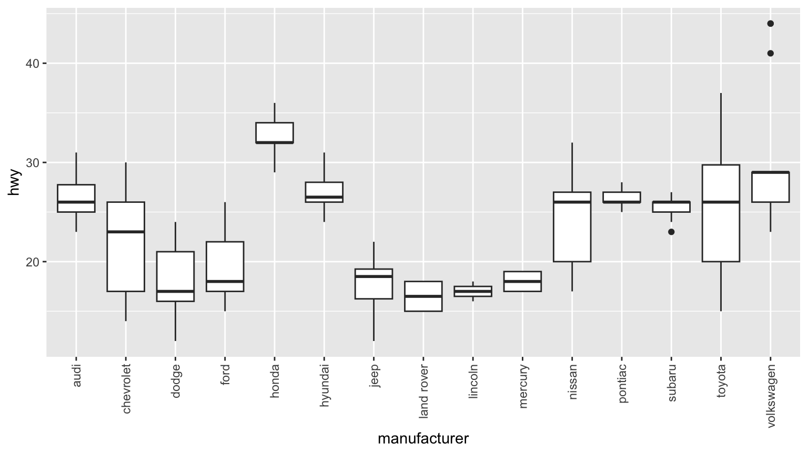
11 Colour scales and legends
A comparison of different color scales:
erupt <- ggplot(faithfuld, aes(waiting, eruptions, fill = density)) +
geom_raster() +
scale_x_continuous(NULL, expand = c(0, 0)) +
scale_y_continuous(NULL, expand = c(0, 0)) +
theme(legend.position = "none")
erupt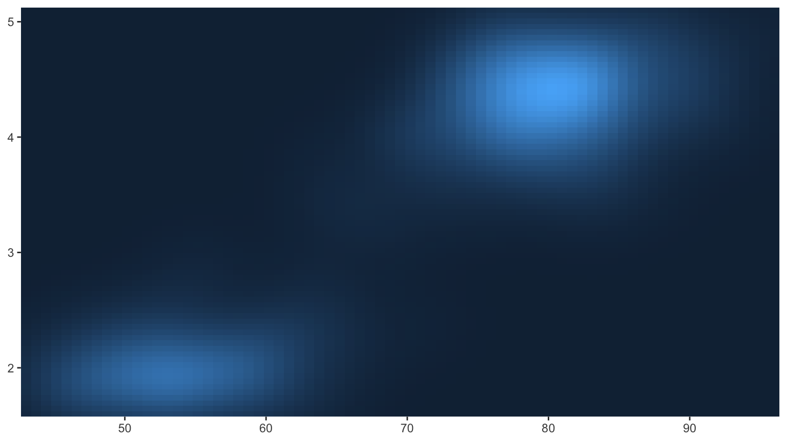
erupt + scale_fill_viridis_c()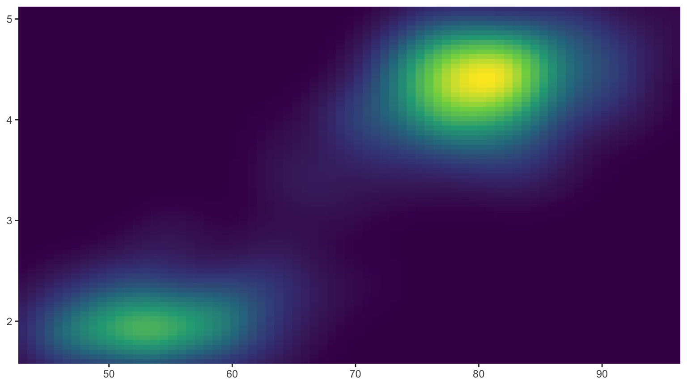
erupt + scale_fill_viridis_c(option = "magma")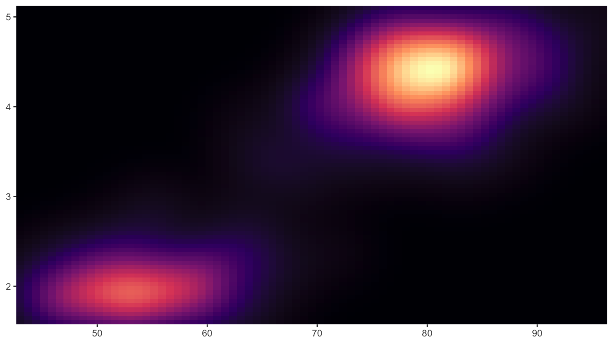
Missing values
All continuous colour scales have an na.value parameter
that controls what colour is used for missing values (including values
outside the range of the scale limits). By default it is set to grey,
which will stand out when you use a colourful scale. If you use a black
and white scale, you might want to set it to something else to make it
more obvious. You can set na.value = NA to make missing
values invisible, or choose a specific colour if you prefer:
df <- data.frame(x = 1, y = 1:5, z = c(1, 3, 2, NA, 5))
base <- ggplot(df, aes(x, y)) +
geom_tile(aes(fill = z), linewidth = 5) +
labs(x = NULL, y = NULL) +
scale_x_continuous(labels = NULL)
base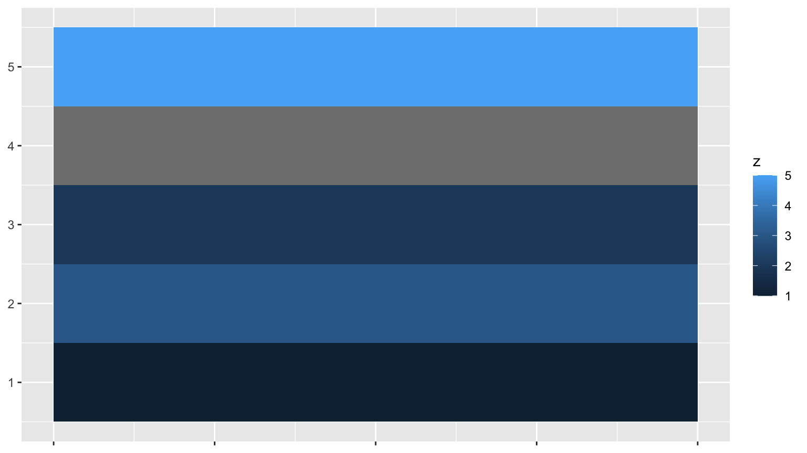
base + scale_fill_gradient(na.value = NA)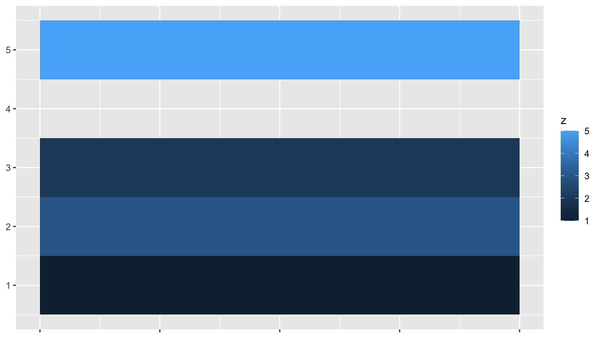
base + scale_fill_gradient(na.value = "yellow")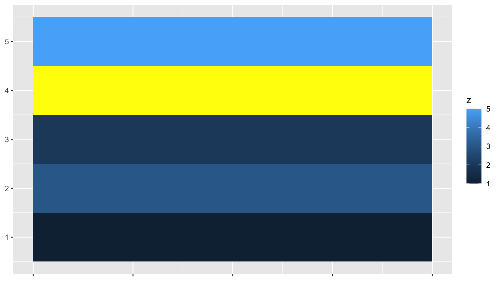
Limits, breaks, and labels
Scale limits for discrete colour scales can be set using the
limits argument to the scale argument, or by using the
lims() helper function. This can be important when the same
variable is represented in different plots, and you want to ensure that
the colours are consistent across plots. To demonstrate this I’ll extend
the example from Section 10.1.1. Colour represents the fuel type, which
can be regular, ethanol,
diesel, premium or
compressed natural gas.
mpg_99 <- ggplot2::mpg %>% filter(year == 1999)
mpg_08 <- ggplot2::mpg %>% filter(year == 2008)
base_99 <- ggplot(mpg_99, aes(displ, hwy, colour = fl)) +
geom_point()
base_08 <- ggplot(mpg_08, aes(displ, hwy, colour = fl)) +
geom_point()
base_99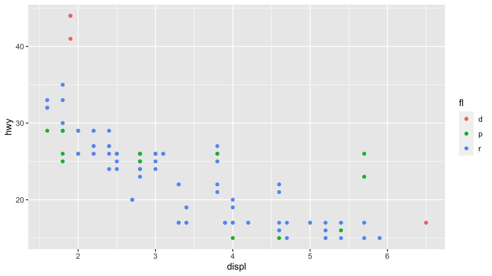
base_08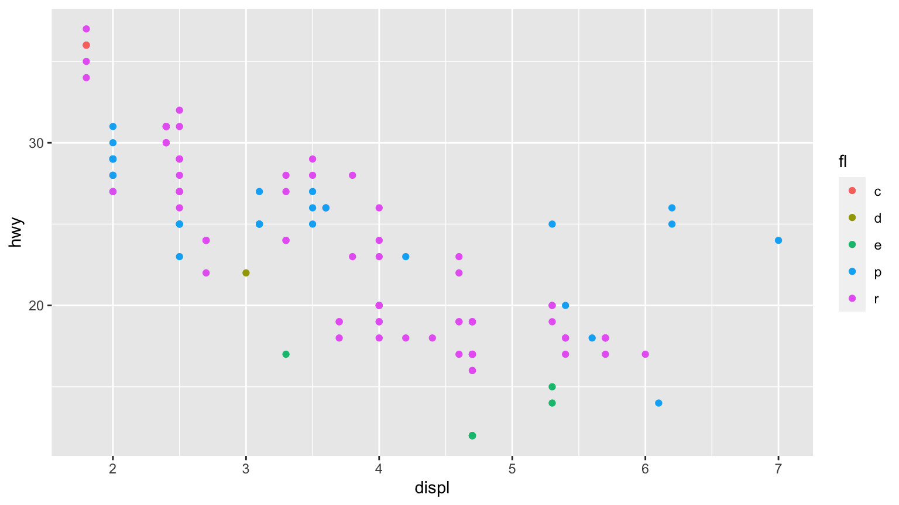
Each plot makes sense on its own, but visual comparison between the
two is difficult. The axis limits are different, and because only
regular, premium and diesel fuels are represented in the 1998 data the
colours are mapped inconsistently. To ensure a consistent mapping for
the colour aesthetic, we can use lims() to manually set the
limits. As discussed in Section 10.1.1 it takes name-value pairs as
input, where the name specifies the aesthetic and the value specifies
the limits:
base_99 + lims(colour = c("c", "d", "e", "p", "r"))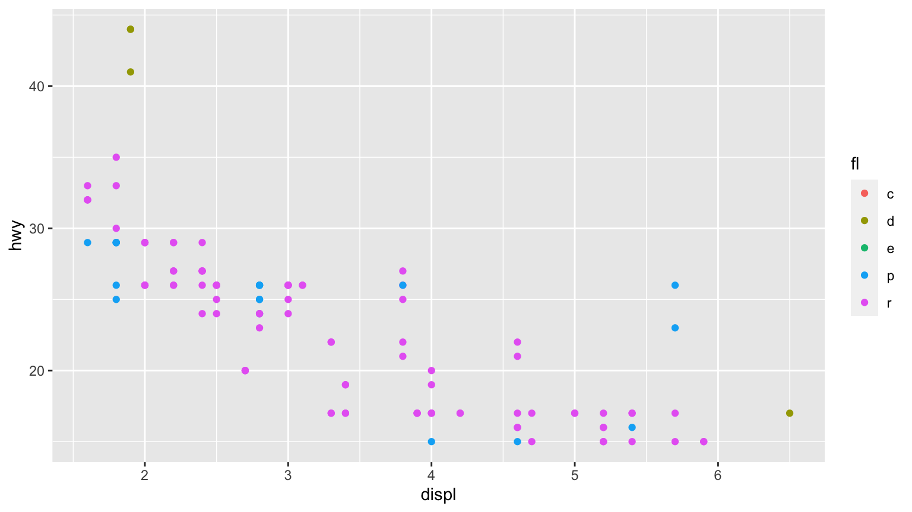
base_08 + lims(colour = c("c", "d", "e", "p", "r"))
The nice thing about lims() is that we can set the
limits for multiple aesthetics at once. To ensure that x, y, and colour
all use consistent limits we can do this:
base_99 +
lims(
x = c(1, 7),
y = c(10, 45),
colour = c("c", "d", "e", "p", "r")
)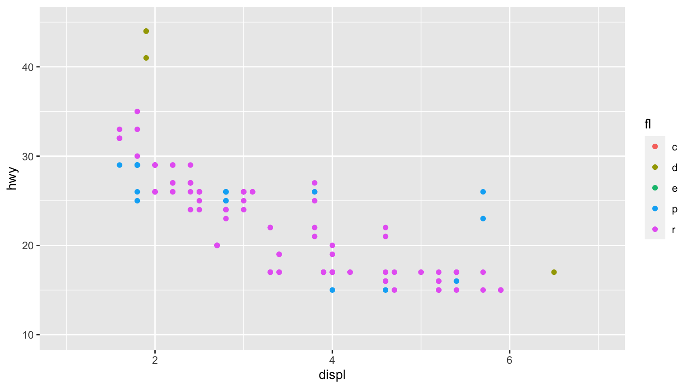
base_08 +
lims(
x = c(1, 7),
y = c(10, 45),
colour = c("c", "d", "e", "p", "r")
)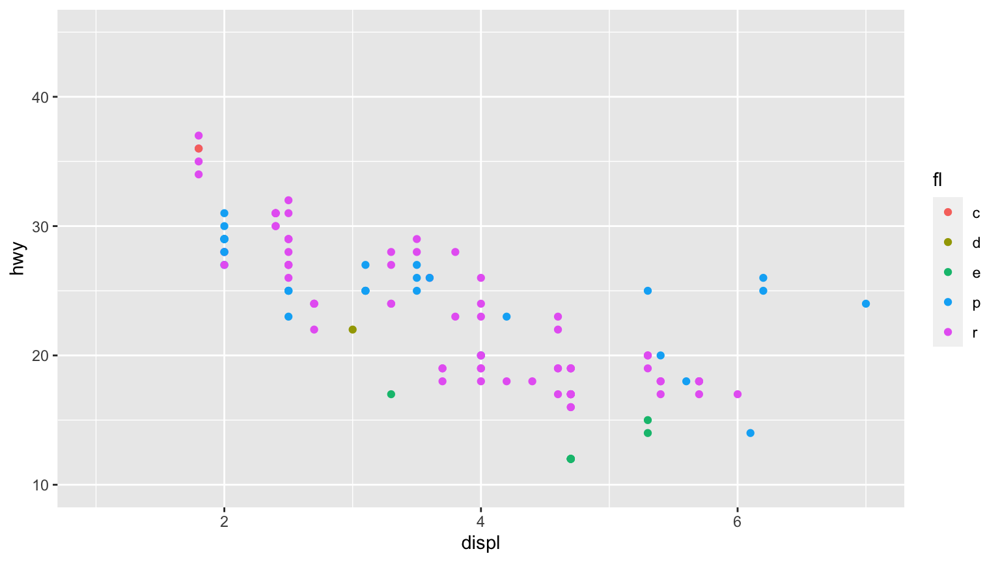
There are two potential limitations to these plots. First, while
setting the scale limits does ensure that colours are mapped identically
in both plots, it also means that the plot for the 1999 data displays
labels for all five fuel types, despite the fact that ethanol and
compressed natural gas fuels were not in use at that time. We can
address this by manually setting the scale breaks, ensuring that only
those fuel types that appear in the data are shown in the legend. The
second limitation is that the labels are not particularly helpful, which
we can address by specifying them manually. When setting multiple
properties of a single scale, it can be more useful to customise using
the arguments to the scale function rather than using the
lims() helper function:
base_99 +
scale_color_discrete(
limits = c("c", "d", "e", "p", "r"),
breaks = c("d", "p", "r"),
labels = c("diesel", "premium", "regular")
)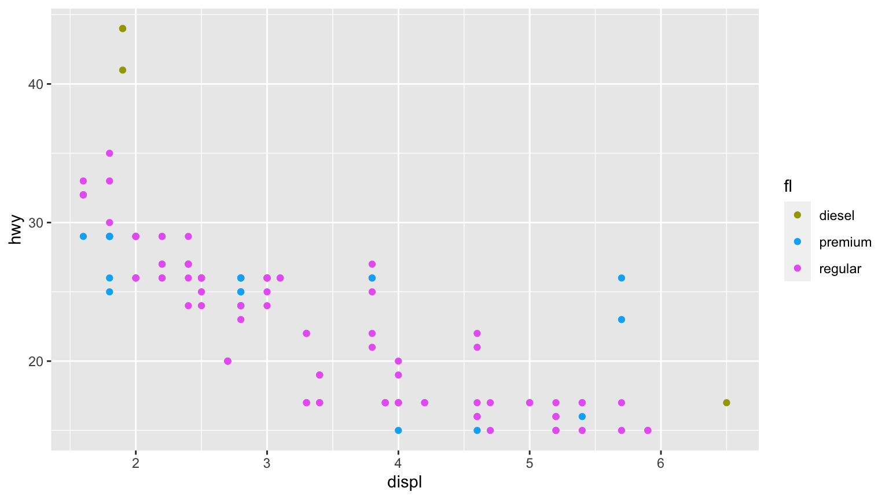
However, there is nothing stopping you from using lims()
to control the position aesthetic limits, while using
scale_colour_discrete() to exercise more fine-grained
control over the colour aesthetic:
base_99 +
lims(x = c(1, 7), y = c(10, 45)) +
scale_color_discrete(
limits = c("c", "d", "e", "p", "r"),
breaks = c("d", "p", "r"),
labels = c("diesel", "premium", "regular")
)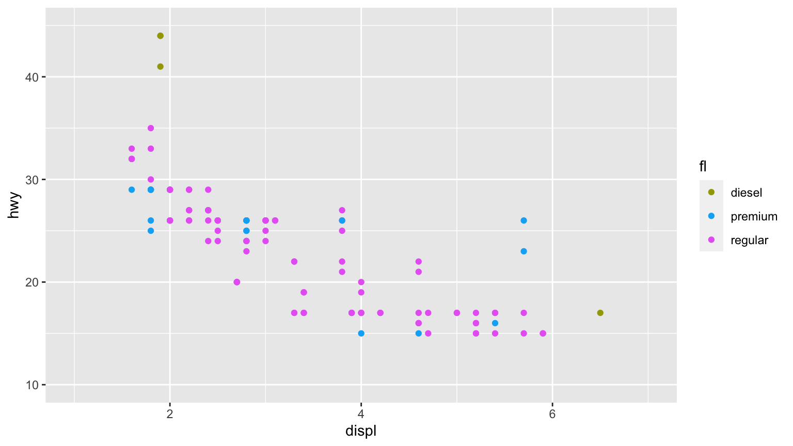
base_08 +
lims(x = c(1, 7), y = c(10, 45)) +
scale_color_discrete(
limits = c("c", "d", "e", "p", "r"),
labels = c("compressed", "diesel", "ethanol", "premium", "regular")
)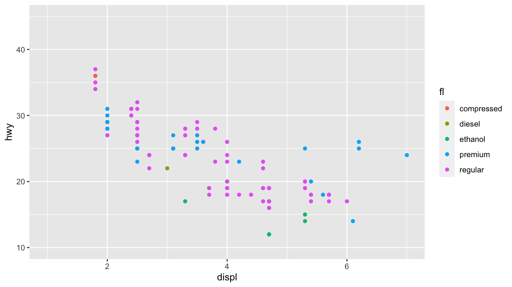
Legends
override.aesis useful when you want the elements in the legend display differently to the geoms in the plot. This is often required when you’ve used transparency or size to deal with moderate overplotting and also used colour in the plot.
base <- ggplot(ggplot2::mpg, aes(displ, hwy, colour = drv)) +
geom_point(size = 4, alpha = 0.2, stroke = 0)
base + guides(colour = guide_legend())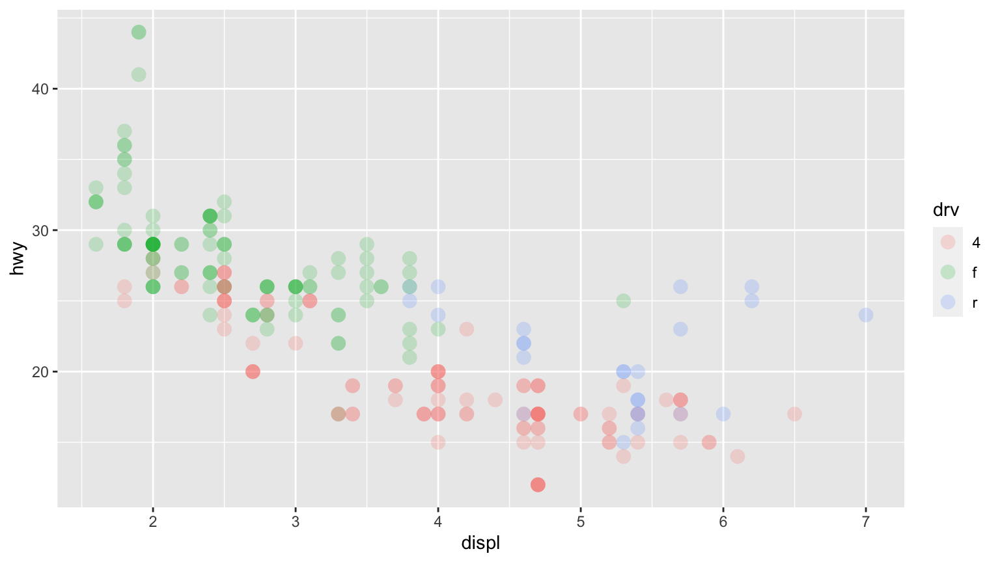
base + guides(colour = guide_legend(override.aes = list(alpha = 1)))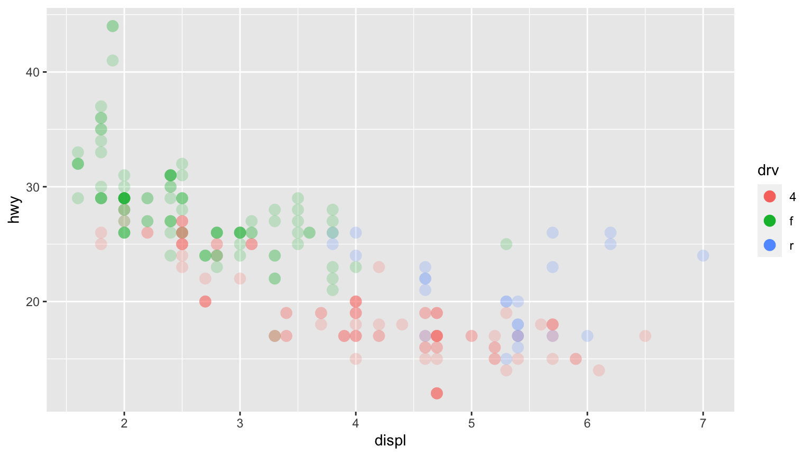
Binned colour scales
Colour scales also come in binned versions. The default scale is
scale_fill_binned() which in turn defaults to
scale_fill_steps(). As with the binned position scales
discussed in Section 10.4 these scales have an n.breaks
argument that controls the number of discrete colour categories created
by the scale. Counterintuitively—because the human visual system is very
good at detecting edges—this can sometimes make a continuous colour
gradient easier to perceive:
erupt + scale_fill_binned()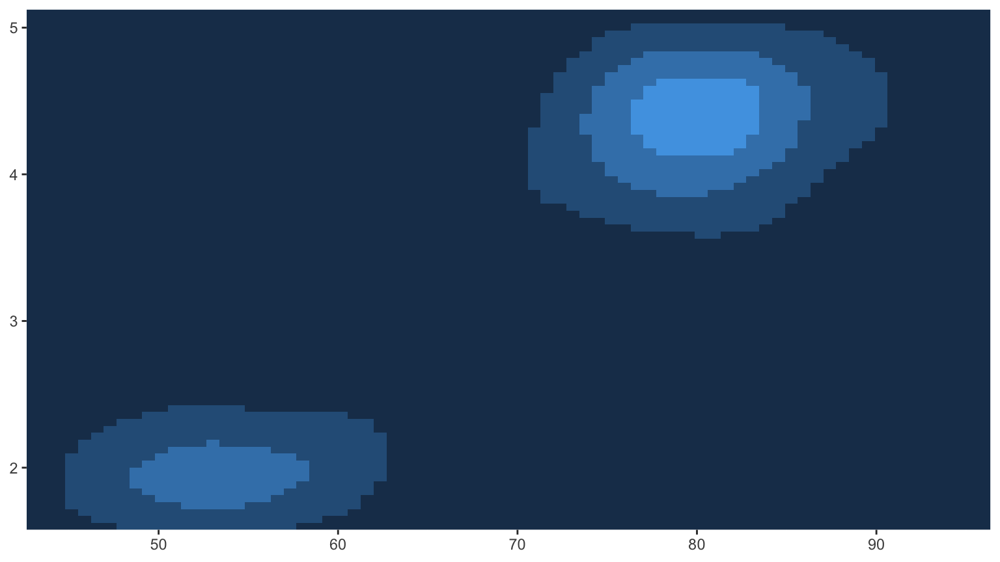
erupt + scale_fill_steps()erupt + scale_fill_steps(n.breaks = 8)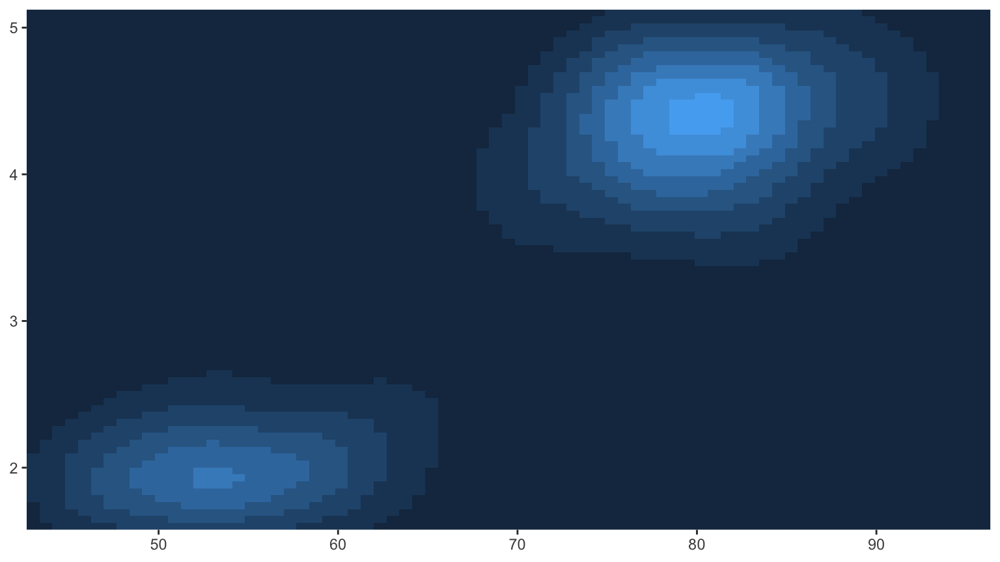
The viridis palettes can be used in the same way, by calling the
palette generating functions directly when specifying the
colours argument to scale_fill_stepsn():
erupt + scale_fill_stepsn(n.breaks = 9, colours = viridis::viridis(9))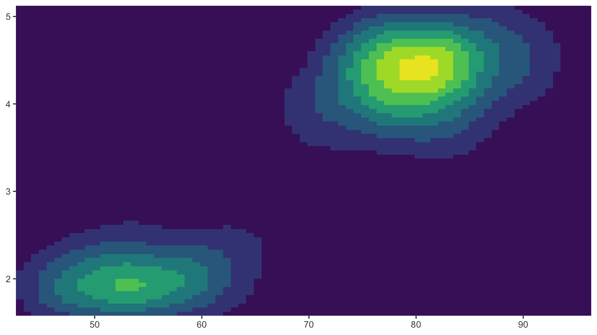
erupt + scale_fill_stepsn(n.breaks = 9, colours = viridis::magma(9))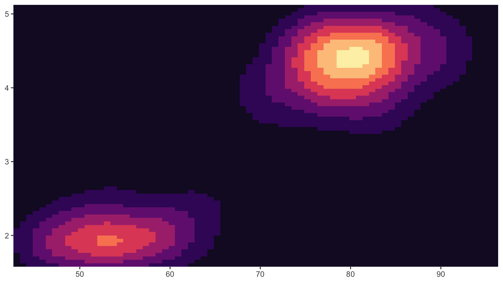
erupt + scale_fill_stepsn(n.breaks = 9, colours = viridis::inferno(9))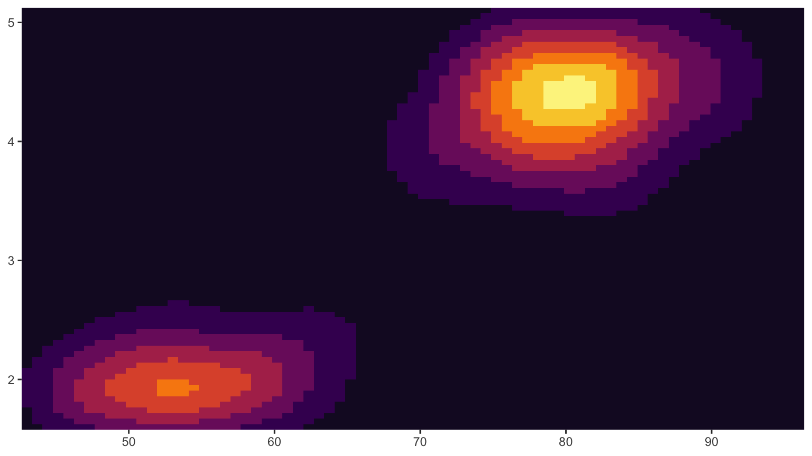
12 Other aesthetics
In addition to position and colour, there are several other aesthetics that ggplot2 can use to represent data.
Size
The size aesthetic is typically used to scale points and text. The
default scale for size aesthetics is scale_size() in which
a linear increase in the variable is mapped onto a linear increase in
the area (not the radius) of the geom. Scaling as a function of area is
a sensible default as human perception of size is more closely mimicked
by area scaling than by radius scaling. By default the smallest value in
the data (more precisely in the scale limits) is mapped to a size of 1
and the largest is mapped to a size of 6. The range
argument allows you to scale the size of the geoms:
base <- ggplot(ggplot2::mpg, aes(displ, hwy, size = cyl)) +
geom_point()
base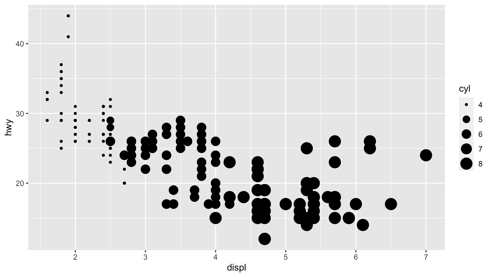
base + scale_size(range = c(1, 2))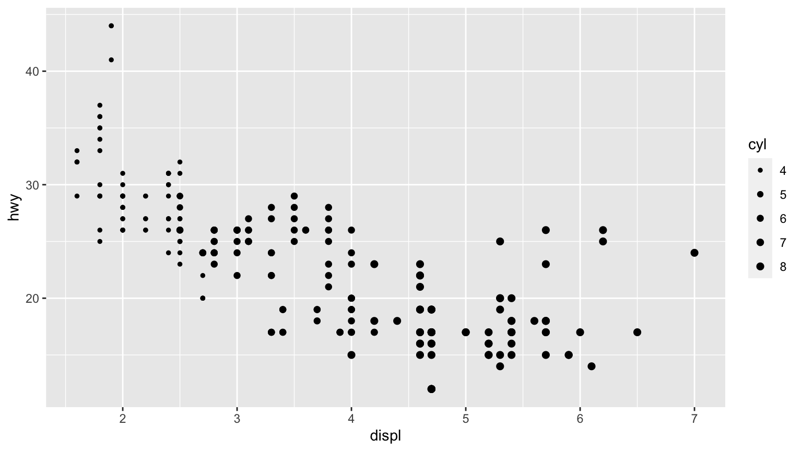
Let’s draw a scale model of the planets!
planets <- data.frame(
name = c("Mercury", "Venus", "Earth", "Mars", "Jupiter", "Saturn", "Uranus", "Neptune"),
type = c(rep("Inner", 4), rep("Outer", 4)),
position = 1:8,
radius = c(2440, 6052, 6378, 3390, 71400, 60330, 25559, 24764),
stringsAsFactors = FALSE
)
planets$name <- with(planets, factor(name, name))
ggplot(planets, aes(1, name, size = radius)) +
geom_point() +
scale_x_continuous(breaks = NULL) +
scale_radius(limits = c(0, NA), range = c(0, 15)) +
labs(x = NULL, y = NULL, size = "Radius", title = "The planets of the solar system") +
theme_quo(y = FALSE, x = FALSE)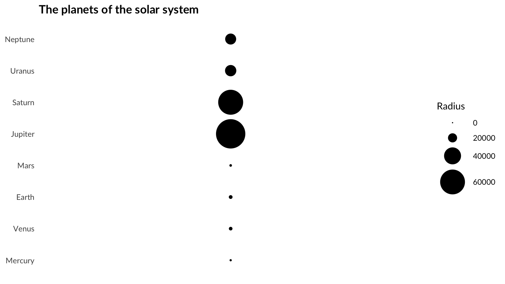
Manual scales
Let’s create a plot with manual scales:
huron <- data.frame(year = 1875:1972, level = as.numeric(LakeHuron))
ggplot(huron, aes(year)) +
geom_line(aes(y = level + 5, colour = "above")) +
geom_line(aes(y = level - 5, colour = "below")) +
scale_colour_manual("Direction",
values = c("above" = "red", "below" = "blue")
) +
labs(x = NULL, y = NULL)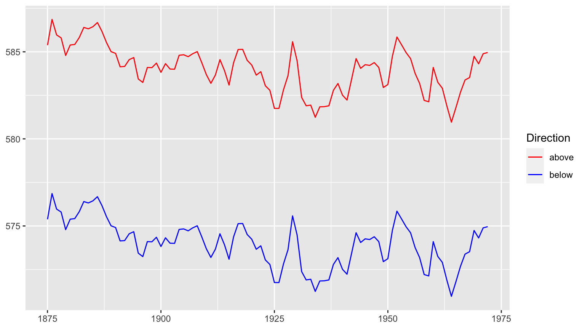
Identity scales
Let’s plot all the R colors!
ggplot(luv_colours, aes(u, v)) +
geom_point(aes(colour = col), size = 3) +
scale_color_identity() +
coord_equal() +
labs(x = NULL, y = NULL)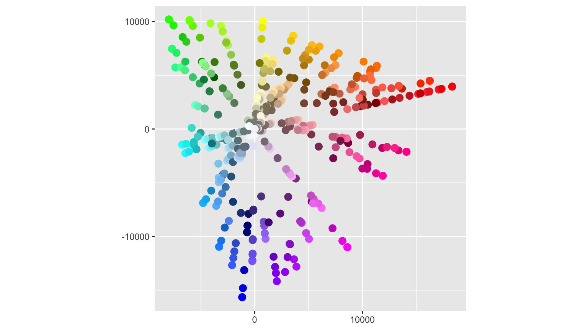